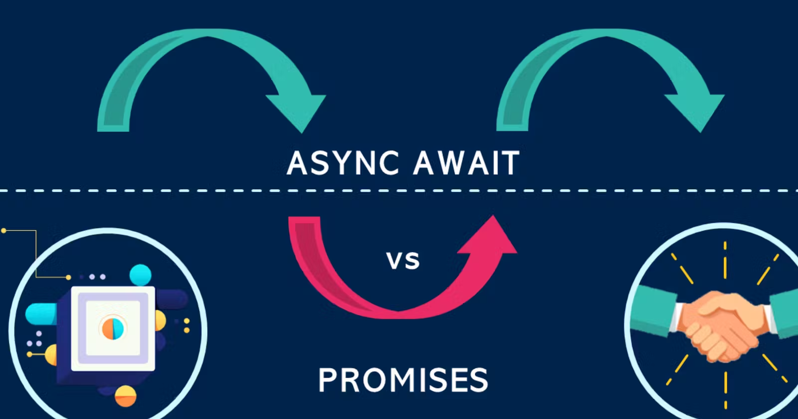

Preguntas Teoricas
Las palabras clave async/await, que no son más que una forma de azúcar sintáctico para gestionar las promesas de una forma más similar a lo que solemos estar acostumbrados. Recordemos un fragmento de código donde manejamos promesas mediante .then():
fetch("/robots.txt")
.then((response) => response.text())
.then((data) => console.log(data));
console.log("Código síncrono.");Con async/await seguimos manejando promesas, sin embargo, hay ciertos cambios importantes:
Vamos a modificar el fragmento de código anterior, para manejar la promise que devuelve el fetch(), pero en lugar de gestionarla con .then(), lo haremos con await. Simplemente, cualquier promise que tengamos, le añadimos la palabra clave await antes.
const response = await fetch("/robots.txt");
const data = await response.text();
console.log(data);
console.log("Código síncrono.");Lo que hace await es detener la ejecución y no continuar. Se espera a que se resuelva la promesa, y hasta que no lo haga, no continua. A diferencia del .then(), aquí tenemos un código bloqueante.
Ahora, vamos a introducir este fragmento de código dentro de una función llamada request(). Quedaría de la siguiente forma:
function request() {
const response = await fetch("/robots.txt");
const data = await response.text();
return data;
}
request();Sin embargo, aquí tenemos un problema. Estamos utilizando await (asíncrono) dentro de request() (síncrono), por lo que antes de ejecutarla, al intentarla definir, nos aparecerá el siguiente error:
Uncaught SyntaxError: await is only valid in async functions and the top level bodies of modules
Para resolver el problema anterior y poder utilizar el await dentro de nuestra función, sólo tenemos que definir nuestra función como función asíncrona y al llamarla utilizar nuevamente el await:
async function request() {
const response = await fetch("/robots.txt");
const data = await response.text();
return data;
}
await request();Sin embargo, vamos a pararnos un poco a pensar esto desde las
bases...
Definamos dos funciones básicas exactamente iguales,
ambas devuelven lo mismo, pero una es síncrona y otra
asíncrona:
function sincrona() { return 42; }
async function asincrona() { return 42; }
sincrona(); // 42
asincrona(); // Promise <fulfilled>: 42En el caso de la función sincrona() devuelve directamente el valor, sin embargo, en el caso de la función asincrona() devuelve una promesa que se ha cumplido inmediatamente, con el valor 42.
Recuerda que en el caso de querer controlar errores o promesas rechazadas con async/await, siempre podrás usar bloques try/catch.
En algunos casos, como al usar un fetch(), donde tenemos que manejar dos promesas, es posible que nos interese utilizar .then() para la primera promesa y await para la segunda. De esta forma podemos manejarlo todo directamente, sin tener que guardarlo en constantes o variables temporales que no utilizaremos sino una sola vez:
async function request() {
return await fetch("/robots.txt")
.then(response => response.text());
}
await request();En este caso, observa que el fetch() devuelve una primera que es manejada por el .then(). La segunda , devuelta por el método response.text() se devuelve hacia fuera y es manejada por el await, que espera a que se cumpla, y una vez cumplida, se devuelve como valor de la función request().
En principio, el comportamiento de await solo permite que se utilice en el interior de funciones declaradas como async. Por lo que, si el ejemplo anterior lo ejecutamos en una consola de Javascript, funcionará correctamente (estamos escribiendo comandos de forma asíncrona), pero si lo escribimos en un fichero, probablemente nos aparecerá el siguiente error:
Uncaught SyntaxError: await is only valid in async function
Esto ocurre porque, como bien dice el mensaje de error, estamos ejecutando await en el contexto global de la aplicación, y debemos ejecutarlo en un contexto de función asíncrona. Muchas veces, para solucionar esto, lo que se suele hacer es lo siguiente:
function request() {
return (async () => await fetch("/robots.txt"))();
}Hemos incluido la función asíncrona con el await dentro de un paréntesis que la envuelve y ejecuta (función)(), por lo que tenemos una función asíncrona autoejecutable en un contexto síncrono.
La función doTask() realiza 10 lanzamientos de un dado y nos devuelve los resultados obtenidos o detiene la tarea si se obtiene un 6. La implementación de la función sufre algunos cambios, simplificándose considerablemente.
En primer lugar, añadimos la palabra clave async antes de los parámetros de la arrow function. En segundo lugar, desaparece cualquier mención a promesas, se devuelven directamente los objetos, ya que al ser una función async se devolverá todo envuelto en una promesa:
const doTask = async (iterations) => {
const numbers = [];
for (let i = 0; i < iterations; i++) {
const number = 1 + Math.floor(Math.random() * 6);
numbers.push(number);
if (number === 6) {
return {
error: true,
message: "Se ha sacado un 6",
};
}
}
return {
error: false,
value: numbers,
};
};Pero donde se introducen cambios considerables es a la hora de consumir las promesas con async/await. No tendríamos que utilizar .then(), sino que podemos simplemente utilizar await para esperar la resolución de la promesa, obteniendo el valor directamente:
const resultado = await doTask(10); // Devuelve un objeto, no una promesaCiertos casos no permiten usar async/await. Por ejemplo, una función .map() de un array de promesa. En esos casos, se recomienda usar un for.....of o una promesa en grupo.
Mediante los métodos estáticos Promise.resolve() y Promise.reject() podemos devolver una promesa cumplida o rechazada respectivamente sin necesidad de crear una promesa con new Promise(), algo que podría ser interesante o cómodo en algunos casos.
Observa que la siguiente función doTask() no es asíncrona:
const doTask = () => {
const number = 1 + Math.floor(Math.random() * 6);
const isEven = number % 2 === 0;
return isEven ? Promise.resolve(number) : Promise.reject(number);
};En este caso, generamos un número aleatorio y se devuelve una promesa. Cuando el número generado es par se cumple la promesa, cuando es impar, se rechaza. Sin embargo, ten en cuenta que el problema en este caso es que la promesa no «envuelve» toda la función, por lo que si la tarea tardase algún tiempo en generar el número, no podríamos utilizar el .then() para consumir la promesa.
Estas funciones estáticas se suelen utilizar en muy pocos casos, para mantener cierta compatibilidad en funciones que se espera que devuelvan una promesa.
EJERCICIOSEjercicio 1:
Crear una función que retorne una promesa que se resuelva
después de 2 segundos.
Ejercicio 2:
Crear una función asíncrona que espere el resultado de varias
promesas y las una en una sola variable saludo.
Ejercicio 3:
Crear una función asíncrona que maneje el error de una promesa
rechazada.
Ejercicio 4:
Promesa con async/await Crea una función asíncrona que espere a
que se resuelva una promesa que devuelve el mensaje “¡Hecho!” después de
1 segundo.
Ejercicio 5:
Crea una función asíncrona que intente esperar a que se resuelva
una promesa que se rechaza con el mensaje “¡Error!” después de 1
segundo. Asegúrate de manejar el error correctamente.
Ejercicio 6:
Crear una función asíncrona que maneje el error de una petición
HTTP fallida.